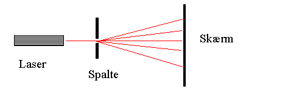

Sendes lys fra en laser gennem en spalte, vil man kunne iagttage et interferensmønster på en skærm.

I forsøget med spalten skyldes interferensen, at lyset fra forskellige områder af spalten vil være i fase eller modfase, når det når forskellige punkter på skærmen.
I en dobbeltspalte interfererer lyset fra de to spalter og når lyset bøjes om en tråd interfererer lyset fra hver side af tråden.
Interferens fra enkeltspalte og dobbeltspalte kan iagttages i programmet regnbuen. Opstil herefter formler for interferens fra spalte, dobbeltspalte og tråd.
Udfør nu en række forsøg med spalte, dobbeltspalte og tråd.
Først bør man udføre forsøg med kendte værdier af spaltebredde og trådtykkelse, så man kan verificere formlernes ægthed.
Dernæst kan man udføre forsøg med fx en tråd med ukendt tykkelse, fx et hår for at bestemme tykkelsen.
Eller man kan benytte en laserpen. Man kan ikke regne med at bølgelængden er 632,8 nm, så forsøget kan gå ud på at bestemme laserpennes bølgelængde.